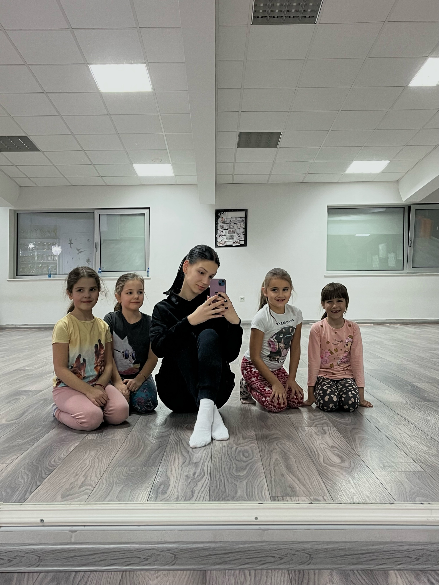

Anastasija Brkljač
Balet je moja ljubav od malena, obožavala sam da gledam graciozne balerine i želela sam postati jedna od njih. Upisala sam se pre 12 godina na balet i uz mog trenera Anu doživela ga na najlepši mogući način. Ana je veoma posvećena svom radu i uvek je tu da nas, pored roditelja, sasluša i posavetuje.
Ana nas je naučila da boja medalje i plasman jesu važni da se vidi gde smo na lestvici, ali da su svakako drugarstvo i ljubav koju imamo u našem studiju veoma dragoceni.
Nedavno sam bila Anin zamenik u studiju i držala časove baleta. Jeste velika stvar biti odgovorna za ceo studio dok trener nije u državi, ali bilo je divno raditi sa malim balerinama i radujem se novom druženju i radu sa decom.
osnovno: OŠ "Desanka Maksimović"
srednje: Gimnazija "20. Oktobar"
buduće: Poljoprivredni fakultet- veterinar